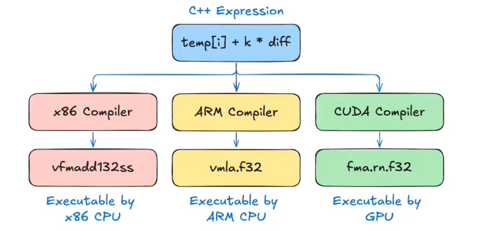

Thrust Tutorial#
The underlying Compilation#

import os
os.environ["PATH"] = "/usr/local/cuda/bin:" + os.environ["PATH"]
%%writefile Sources/cuda_properties.cpp
#include <iostream>
#include <cuda_runtime.h>
static double max_bandwidth(cudaDeviceProp &prop) {
const std::size_t mem_freq =
static_cast<std::size_t>(prop.memoryClockRate) * 1000; // kHz -> Hz
const int bus_width = prop.memoryBusWidth;
const std::size_t bytes_per_second = 2 * mem_freq * bus_width / CHAR_BIT;
return static_cast<double>(bytes_per_second) / 1024 / 1024 /
1024; // B/s -> GB/s
}
int main() {
int deviceCount;
cudaGetDeviceCount(&deviceCount);
for (int device = 0; device < deviceCount; ++device) {
cudaDeviceProp prop;
cudaGetDeviceProperties(&prop, device);
std::cout << "Device " << device << ": " << prop.name << std::endl;
std::cout << " Total Global Memory: " << prop.totalGlobalMem / (1024 * 1024) << " MB" << std::endl;
std::cout << " Shared Memory per Block: " << prop.sharedMemPerBlock / 1024 << " KB" << std::endl;
std::cout << " Registers per Block: " << prop.regsPerBlock << std::endl;
std::cout << " Warp Size: " << prop.warpSize << std::endl;
std::cout << " Max Threads per Block: " << prop.maxThreadsPerBlock << std::endl;
std::cout << " Max Threads Dimension: ["
<< prop.maxThreadsDim[0] << ", "
<< prop.maxThreadsDim[1] << ", "
<< prop.maxThreadsDim[2] << "]" << std::endl;
std::cout << " Max Grid Size: ["
<< prop.maxGridSize[0] << ", "
<< prop.maxGridSize[1] << ", "
<< prop.maxGridSize[2] << "]" << std::endl;
std::cout << " Total Constant Memory: " << prop.totalConstMem / 1024 << " KB" << std::endl;
std::cout << " Compute Capability: " << prop.major << "." << prop.minor << std::endl;
std::cout << " Max Memory Bandwidth: " << max_bandwidth(prop) << " GB/s" << std::endl;
}
return 0;
}
Overwriting Sources/cuda_properties.cpp
!nvcc --extended-lambda -o /tmp/cuda_properties.out Sources/cuda_properties.cpp -x cu -arch=native # build executable
!/tmp/cuda_properties.out # run executable
nvcc fatal : Value 'native' is not defined for option 'gpu-architecture'
/bin/bash: /tmp/cuda_properties.out: No such file or directory
Code Explanation#
Start withe the following code:
%%writefile Sources/cpu-cooling.cpp
#include <cstdio>
#include <vector>
#include <algorithm>
int main() {
float k = 0.5;
float ambient_temp = 20;
std::vector<float> temp{ 42, 24, 50 };
auto op = [=](float temp){
float diff = ambient_temp - temp;
return temp + k * diff;
};
std::printf("step temp[0] temp[1] temp[2]\n");
for (int step = 0; step < 3; step++) {
std::transform(temp.begin(), temp.end(),
temp.begin(), op);
std::printf("%d %.2f %.2f %.2f\n", step, temp[0], temp[1], temp[2]);
}
}
Overwriting Sources/cpu-cooling.cpp
!nvcc -x cu -arch=native Sources/cpu-cooling.cpp -o temp/a.out # compile the code
!./temp/a.out # run the executable
nvcc fatal : Value 'native' is not defined for option 'gpu-architecture'
./temp/a.out: /lib/x86_64-linux-gnu/libc.so.6: version `GLIBC_2.34' not found (required by ./temp/a.out)
We implement it at GPU side.
thrust::universal_vector is a vector that can be used in both host and device side.
Unified memory is a memory management system that allows the CPU and GPU to share a single memory space without explicit data transfers cudaMemcpy. In the underlying implementation, it was created using cudaMallocManaged. When using unified memory, the CUDA runtime automatically transfers the data whose unit is a page (typically 4KB) between the host and device as needed. But, the synchronization is still needed. It is UB(undefined behavior) if the data is accessed from both host and device without synchronization.
%%writefile Sources/thrust-cooling.cpp
#include <thrust/execution_policy.h>
#include <thrust/universal_vector.h>
#include <thrust/transform.h>
#include <cstdio>
int main() {
float k = 0.5;
float ambient_temp = 20;
thrust::universal_vector<float> temp{ 42, 24, 50 };
auto transformation = [=] __host__ __device__ (float temp) { return temp + k * (ambient_temp - temp); };
std::printf("step temp[0] temp[1] temp[2]\n");
for (int step = 0; step < 3; step++) {
thrust::transform(thrust::device, temp.begin(), temp.end(), temp.begin(), transformation);
std::printf("%d %.2f %.2f %.2f\n", step, temp[0], temp[1], temp[2]);
}
}
Overwriting Sources/thrust-cooling.cpp
!nvcc -std=c++14 --extended-lambda Sources/thrust-cooling.cpp -x cu -arch=native -o temp/a.out # compile the code
!./temp/a.out # run the executable
nvcc fatal : Value 'native' is not defined for option 'gpu-architecture'
./temp/a.out: /lib/x86_64-linux-gnu/libc.so.6: version `GLIBC_2.34' not found (required by ./temp/a.out)
Execution Policy vs Specifier#
Execution Plolicy(thrust::device,thrust::host) indicates where the code will run. It doesn’t automatically compile code for the location.
Execution Specifier(__host__,__device__) indicates where the code can run. It doesn’t automatically run code there.


Code exercise: Compute Median Temperature#
%%writefile Sources/port-sort-to-gpu.cpp
#include <thrust/execution_policy.h>
#include <thrust/universal_vector.h>
#include <thrust/transform.h>
#include <cstdio>
#include <algorithm>
float median(thrust::universal_vector<float> vec)
{
std::sort(vec.begin(), vec.end());
return vec[vec.size() / 2];
}
int main(){
float k =0.5;
float ambient_temp =20;
thrust::universal_vector<float> temp{42,24,50};
auto transformation = [=] __host__ __device__ (float temp) { return temp + k * (ambient_temp - temp); };
std::printf("step median\n");
for (int step = 0; step < 3; step++) {
thrust::transform(thrust::device, temp.begin(),temp.end(),
temp.begin(), transformation);
float median_temp = median(temp);
std::printf("%d %.2f\n", step, median_temp);
}
}
Overwriting Sources/port-sort-to-gpu.cpp
# !nvcc -std=c++14 --extended-lambda Sources/port-sort-to-gpu.cpp -x cu -arch=native -o temp/a.out # compile the code
# !time -v ./temp/a.out # run the executable
!/usr/bin/time -v ./temp/a.out
./temp/a.out: /lib/x86_64-linux-gnu/libc.so.6: version `GLIBC_2.34' not found (required by ./temp/a.out)
Command exited with non-zero status 1
Command being timed: "./temp/a.out"
User time (seconds): 0.00
System time (seconds): 0.00
Percent of CPU this job got: 100%
Elapsed (wall clock) time (h:mm:ss or m:ss): 0:00.00
Average shared text size (kbytes): 0
Average unshared data size (kbytes): 0
Average stack size (kbytes): 0
Average total size (kbytes): 0
Maximum resident set size (kbytes): 852
Average resident set size (kbytes): 0
Major (requiring I/O) page faults: 0
Minor (reclaiming a frame) page faults: 49
Voluntary context switches: 0
Involuntary context switches: 0
Swaps: 0
File system inputs: 0
File system outputs: 0
Socket messages sent: 0
Socket messages received: 0
Signals delivered: 0
Page size (bytes): 4096
Exit status: 1
Thrust fancy iterators#
We don’t need to declare the execution policy when using fancy iterators.
Here we show three types of fancy iterators in Thrust.
auto begin = thrust::make_counting_iterator(1);
auto end = begin + 10;
thrust::for_each(begin,end,print);
thrust::make_zip_iterator(a.begin(), b.begin());
thrust::make_transform_iterator(a.begin(),
[] __host__ __device__ (float x) { return x * x; });
In the following code, we will implement the maximum of the change in the temperature using Thrust. The original step should be
compute the gap between the current temperature and previous temperature
aandb;compute the maximum of the gap
But in this implementation, we have to read 2*n floats total from a and b, and then store n floats to the temporary array temp. Then in the reduction step, we read n floats from temp. So the total memory access is 4*n floats.
To optimize the memory access, we can find the maximum when computing the gap, so that we don’t need the temporary array temp to store the gap. The total memory access is 2*n floats.
%%writefile Sources/naive-vs-iterators.cpp
#include <thrust/execution_policy.h>
#include <thrust/universal_vector.h>
#include <thrust/transform.h>
#include <thrust/reduce.h>
#include <thrust/sequence.h>
#include <cstdio>
#include <chrono>
float naive_max_change(const thrust::universal_vector<float>& a, const thrust::universal_vector<float>& b)
{
thrust::universal_vector<float> diff(a.size());
//x = a[i];y = b[i];diff[i] = abs(x - y);
thrust::transform(thrust::device, a.begin(), a.end(), b.begin(), diff.begin(),
[]__host__ __device__(float x, float y) {
return abs(x - y);
});
return thrust::reduce(thrust::device, diff.begin(), diff.end(), 0.0f, thrust::maximum<float>{});
}
float max_change(const thrust::universal_vector<float>& a, const thrust::universal_vector<float>& b)
{
auto zip = thrust::make_zip_iterator(a.begin(), b.begin());
auto transform = thrust::make_transform_iterator(zip, []__host__ __device__(thrust::tuple<float, float> t) {
return abs(thrust::get<0>(t) - thrust::get<1>(t));
});
return thrust::reduce(thrust::device, transform, transform + a.size(), 0.0f, thrust::maximum<float>{});
}
int main()
{
// allocate vectors containing 2^28 elements
thrust::universal_vector<float> a(1 << 28);
thrust::universal_vector<float> b(1 << 28);
thrust::sequence(a.begin(), a.end());
thrust::sequence(b.rbegin(), b.rend());
auto start_naive = std::chrono::high_resolution_clock::now();
naive_max_change(a, b);
auto end_naive = std::chrono::high_resolution_clock::now();
const double naive_duration = std::chrono::duration_cast<std::chrono::milliseconds>(end_naive - start_naive).count();
auto start = std::chrono::high_resolution_clock::now();
max_change(a, b);
auto end = std::chrono::high_resolution_clock::now();
const double duration = std::chrono::duration_cast<std::chrono::milliseconds>(end - start).count();
std::printf("iterators are %g times faster than naive approach\n", naive_duration / duration);
}
Overwriting Sources/naive-vs-iterators.cpp
!nvcc --extended-lambda -o /tmp/a.out Sources/naive-vs-iterators.cpp -x cu -arch=native # build executable
!/tmp/a.out # run executable
nvcc fatal : Value 'native' is not defined for option 'gpu-architecture'
/bin/bash: /tmp/a.out: No such file or directory
Tabulate#
Here, we implement a heat transfer simulation using the tabulate iterator to compute the temperature at each point based on its neighbors.
thrust::tabulate is the equivalent of transformation of the counting iterator.
in
thrust::transform, the object ofopis the value of the input iterator. inthrust::tabulate, the object ofopis the index of the output iterator.
// navie version
#include <cuda/std/mdspan>
// extract the row and column idx
__host__ __device__
cuda::std::pair<int, int> row_col(int id, int width){
return cuda::std::make_pair(id / width, id % width);
}
void simulate(
int height, int width,
const thrust::universal_vector<float> &in,
thrust::universal_vector<float> &out
){
const float *in_ptr = thrust::raw_pointer_cast(in.data()); // get the raw memory pointer
auto cell_indices = thrust::make_counting_iterator(0);
thrust::transform(
thrust::device, cell_indices, cell_indices + in.size(), out.begin(),
[in_ptr, height, width] __host__ __device__ (int id){
auto [row, col] = row_col(id, width);
// boundary check
if (row > 0 && col > 0 && row < height - 1 && col < width - 1) {
float d2tdx2 = in_ptr[(row) * width + col - 1] - 2 * in_ptr[row * width + col] + in_ptr[(row) * width + col + 1];
float d2tdy2 = in_ptr[(row - 1) * width + col] - 2 * in_ptr[row * width + col] + in_ptr[(row + 1) * width + col];
return in_ptr[row * width + column] + 0.2f * (d2tdx2 + d2tdy2);
} else {
return in_ptr[row * width + column];
}
}
);
}
Cell In[12], line 26
return in_ptr[row * width + column] + 0.2f * (d2tdx2 + d2tdy2);
^
SyntaxError: invalid decimal literal
To clarify this function, we use thrust::tabulate to replace the thrust::transform and delete the temporary iterator thrust::make_counting_iterator(0).
// tabulate version
#include <thrust/tabulate.h>
void simulate(
int height, int width,
const thrust::universal_vector<float> &in,
thrust::universal_vector<float> &out
){
const float *in_ptr = thrust::raw_pointer_cast(in.data()); // get the raw memory pointer
thrust::tabulate(
thrust::device, out.begin(), out.end(),
[in_ptr, height, width] __host__ __device__ (int id){
auto [row, col] = row_col(id, width);
// boundary check
if (row > 0 && col > 0 && row < height - 1 && col < width - 1) {
float d2tdx2 = in_ptr[(row) * width + col - 1] - 2 * in_ptr[row * width + col] + in_ptr[(row) * width + col + 1];
float d2tdy2 = in_ptr[(row - 1) * width + col] - 2 * in_ptr[row * width + col] + in_ptr[(row + 1) * width + col];
return in_ptr[row * width + col] + 0.2f * (d2tdx2 + d2tdy2);
} else {
return in_ptr[row * width + col];
}
}
);
}
cuda::std::mdspan for multi-dimensional array view#

Notice that we use row_col to conver the 1D index to 2D index. This is because Thrust doesn’t support multi-dimensional array view. We can use thrust::mdspan to achieve this.
syntax:
cuda::std::mdspan md(pointer, extent0, extent1, ...);
%%writefile Sources/mdspan.cpp
#include <cuda/std/mdspan>
#include <cuda/std/array>
#include <thrust/device_ptr.h>
#include <cstdio>
int main() {
cuda::std::array<int, 6> sd {0, 1, 2, 3, 4, 5};
std::printf("type of sd.data(): %s\n", typeid(sd.data()).name()); // type of sd.data(): Pi i.e., pointer to int
std::printf("type of sd.data(): %s\n", typeid(thrust::raw_pointer_cast(sd.data())).name());
// cuda::std::mdspan md(sd.data(), 2, 3);
cuda::std::mdspan md(thrust::raw_pointer_cast(sd.data()), 2, 3);
std::printf("type of md(): %s\n", typeid(md).name());
std::printf("md(0, 0) = %d\n", md(0, 0)); // 0
std::printf("md(1, 2) = %d\n", md(1, 2)); // 5
std::printf("size = %zu\n", md.size()); // 6
std::printf("height = %zu\n", md.extent(0)); // 2
std::printf("width = %zu\n", md.extent(1)); // 3
}
Overwriting Sources/mdspan.cpp
!nvcc --extended-lambda -o /tmp/a.out Sources/mdspan.cpp -x cu -arch=native # build executable
!/tmp/a.out # run executable
type of sd.data(): Pi
type of sd.data(): Pi
type of md(): N4cuda3std3__46mdspanIiNS1_7extentsImJLm18446744073709551615ELm18446744073709551615EEEENS1_12layout_rightENS1_16default_accessorIiEEEE
md(0, 0) = 0
md(1, 2) = 5
size = 6
height = 2
width = 3
Serial Vs Parallel#

Segmented Summarization#
We use the example of row reduction to illustrate the difference between serial and parallel execution.
First we show the naive serial implementation. We use transform to compute the reduction of each row (segment) one by one.
%%writefile Sources/naive-segmented-sum.cpp
#include <cstdio>
#include <chrono>
#include <thrust/tabulate.h>
#include <thrust/execution_policy.h>
#include <thrust/universal_vector.h>
thrust::universal_vector<float> row_temperatures(
int height, int width,
const thrust::universal_vector<float>& temp)
{
// allocate vector to store sums
thrust::universal_vector<float> sums(height);
// take raw pointer to `temp`
const float *d_temp_ptr = thrust::raw_pointer_cast(temp.data());
// compute row sum
thrust::tabulate(thrust::device, sums.begin(), sums.end(), [=]__host__ __device__(int row_id) {
float sum = 0;
for (int i = 0; i < width; i++) {
sum += d_temp_ptr[row_id * width + i];
}
return sum;
});
return sums;
}
thrust::universal_vector<float> init(int height, int width) {
const float low = 15.0;
const float high = 90.0;
thrust::universal_vector<float> temp(height * width, low);
thrust::fill(thrust::device, temp.begin(), temp.begin() + width, high);
return temp;
}
int main()
{
int height = 16;
int width = 16777216;
thrust::universal_vector<float> temp = init(height, width);
auto begin = std::chrono::high_resolution_clock::now();
thrust::universal_vector<float> sums = row_temperatures(height, width, temp);
auto end = std::chrono::high_resolution_clock::now();
const double seconds = std::chrono::duration<double>(end - begin).count();
const double gigabytes = static_cast<double>(temp.size() * sizeof(float)) / 1024 / 1024 / 1024;
const double throughput = gigabytes / seconds;
std::printf("computed in %g s\n", seconds);
std::printf("achieved throughput: %g GB/s\n", throughput);
}
Overwriting Sources/naive-segmented-sum.cpp
!nvcc --extended-lambda -o /tmp/a.out Sources/naive-segmented-sum.cpp -x cu -arch=native # build executable
!/tmp/a.out # run executable
computed in 0.466818 s
achieved throughput: 2.14216 GB/s
To avoid manual loop, we can use thrust::reduce_by_key to implement the segmented reduction in parallel.
%%writefile Sources/reduction-segmented-sum.cpp
#include <cstdio>
#include <chrono>
#include <thrust/tabulate.h>
#include <thrust/iterator/discard_iterator.h>
#include <thrust/execution_policy.h>
#include <thrust/universal_vector.h>
thrust::universal_vector<float> row_temperatures(
int height, int width,
thrust::universal_vector<float>& temp)
{
thrust::universal_vector<int> row_ids(height * width);
thrust::tabulate(thrust::device, row_ids.begin(), row_ids.end(),[width]__host__ __device__(int i) {
return i / width;
});
thrust::universal_vector<float> sums(height);
thrust::reduce_by_key(
thrust::device,
row_ids.begin(), row_ids.end(), // input keys
temp.begin(), // input values
thrust::make_discard_iterator(), // output keys
sums.begin()); // output values
return sums;
}
thrust::universal_vector<float> init(int height, int width) {
const float low = 15.0;
const float high = 90.0;
thrust::universal_vector<float> temp(height * width, low);
thrust::fill(thrust::device, temp.begin(), temp.begin() + width, high);
return temp;
}
int main()
{
int height = 16;
int width = 16777216;
thrust::universal_vector<float> temp = init(height, width);
auto begin = std::chrono::high_resolution_clock::now();
thrust::universal_vector<float> sums = row_temperatures(height, width, temp);
auto end = std::chrono::high_resolution_clock::now();
const double seconds = std::chrono::duration<double>(end - begin).count();
const double gigabytes = static_cast<double>(temp.size() * sizeof(float)) / 1024 / 1024 / 1024;
const double throughput = gigabytes / seconds;
std::printf("computed in %g s\n", seconds);
std::printf("achieved throughput: %g GB/s\n", throughput);
}
Overwriting Sources/reduction-segmented-sum.cpp
!nvcc --extended-lambda -o /tmp/a.out Sources/reduction-segmented-sum.cpp -x cu -arch=native # build executable
!/tmp/a.out # run executable
computed in 0.244539 s
achieved throughput: 4.08933 GB/s
Even though we explicitly avoid the for loop, we introduce the overhead of row_ids array to store the row indices. This array is of size num_rows * num_cols, which can be very large when the matrix is large.
To optimize the memory usage, we can use thrust::make_transform_iterator to generate the row indices on the fly instead of storing them in an array.
%%writefile Sources/reduction-segmented-sum-op.cpp
#include <cstdio>
#include <chrono>
#include <thrust/tabulate.h>
#include <thrust/iterator/discard_iterator.h>
#include <thrust/execution_policy.h>
#include <thrust/universal_vector.h>
thrust::universal_vector<float> row_temperatures(
int height, int width,
thrust::universal_vector<float>& temp)
{
auto row_ids_begin = thrust::make_transform_iterator(
thrust::make_counting_iterator(0),
[width]__host__ __device__ (int idx){
return idx/width;
});
auto row_ids_end = row_ids_begin + temp.size();
thrust::universal_vector<float> sums(height);
thrust::reduce_by_key(
thrust::device,
row_ids_begin, row_ids_end, // input keys
temp.begin(), // input values
thrust::make_discard_iterator(), // output keys
sums.begin()); // output values
return sums;
}
thrust::universal_vector<float> init(int height, int width) {
const float low = 15.0;
const float high = 90.0;
thrust::universal_vector<float> temp(height * width, low);
thrust::fill(thrust::device, temp.begin(), temp.begin() + width, high);
return temp;
}
int main()
{
int height = 16;
int width = 16777216;
thrust::universal_vector<float> temp = init(height, width);
auto begin = std::chrono::high_resolution_clock::now();
thrust::universal_vector<float> sums = row_temperatures(height, width, temp);
auto end = std::chrono::high_resolution_clock::now();
const double seconds = std::chrono::duration<double>(end - begin).count();
const double gigabytes = static_cast<double>(temp.size() * sizeof(float)) / 1024 / 1024 / 1024;
const double throughput = gigabytes / seconds;
std::printf("computed in %g s\n", seconds);
std::printf("achieved throughput: %g GB/s\n", throughput);
}
Writing Sources/reduction-segmented-sum-op.cpp
!nvcc --extended-lambda -o /tmp/a.out Sources/reduction-segmented-sum-op.cpp -x cu -arch=native # build executable
!/tmp/a.out # run executable
computed in 0.0032395 s
achieved throughput: 308.689 GB/s
Sgemented Mean#
To compute the segmented mean, we can first compute the segmented sum and then divide each sum by the number of elements in each segment.
%%writefile Sources/reduction-segmented-mean.cpp
#include <cstdio>
#include <chrono>
#include <thrust/tabulate.h>
#include <thrust/iterator/discard_iterator.h>
#include <thrust/execution_policy.h>
#include <thrust/universal_vector.h>
struct mean_functor {
int width;
__host__ __device__ float operator()(float sum) const {
return sum / width;
}
};
thrust::universal_vector<float> row_temperatures_mean(
int height, int width,
thrust::universal_vector<float>& temp)
{
thrust::universal_vector<int> means(height);
auto row_ids_begin = thrust::make_transform_iterator(
thrust::make_counting_iterator(0),
[width]__host__ __device__ (int idx){
return idx/width;
});
auto row_ids_end = row_ids_begin + temp.size();
// compute the summation first
thrust::reduce_by_key(
thrust::device,
row_ids_begin, row_ids_end, // input keys
temp.begin(), // input values
thrust::make_discard_iterator(), // output keys
means.begin()); // output values
// then divide each sum by width to get the mean
thrust::transform(
thrust::device,
means.begin(), means.end(),
means.begin(),
mean_functor{width}
);
return means;
}
thrust::universal_vector<float> init(int height, int width) {
const float low = 15.0;
const float high = 90.0;
thrust::universal_vector<float> temp(height * width, low);
thrust::fill(thrust::device, temp.begin(), temp.begin() + width, high);
return temp;
}
int main()
{
int height = 16;
int width = 16777216;
thrust::universal_vector<float> temp = init(height, width);
auto begin = std::chrono::high_resolution_clock::now();
thrust::universal_vector<float> means = row_temperatures_mean(height, width, temp);
auto end = std::chrono::high_resolution_clock::now();
const double seconds = std::chrono::duration<double>(end - begin).count();
const double gigabytes = static_cast<double>(temp.size() * sizeof(float)) / 1024 / 1024 / 1024;
const double throughput = gigabytes / seconds;
std::printf("computed in %g s\n", seconds);
std::printf("achieved throughput: %g GB/s\n", throughput);
}
Overwriting Sources/reduction-segmented-mean.cpp
!nvcc --extended-lambda -o /tmp/a.out Sources/reduction-segmented-mean.cpp -x cu -arch=native # build executable
! /tmp/a.out # run executable
computed in 0.00418439 s
achieved throughput: 238.983 GB/s
We can fuse the two steps into one step using make_transform_output_iterator after the segmented sum.
%%writefile Sources/reduction-segmented-mean.cpp
#include <cstdio>
#include <chrono>
#include <thrust/tabulate.h>
#include <thrust/iterator/discard_iterator.h>
#include <thrust/iterator/transform_output_iterator.h>
#include <thrust/execution_policy.h>
#include <thrust/universal_vector.h>
struct mean_functor {
int width;
//! `()` :
__host__ __device__ float operator()(float sum) const {
return sum / width;
}
};
thrust::universal_vector<float> row_temperatures_mean(
int height, int width,
thrust::universal_vector<float>& temp)
{
thrust::universal_vector<int> means(height);
auto row_ids_begin = thrust::make_transform_iterator(
thrust::make_counting_iterator(0),
[width]__host__ __device__ (int idx){
return idx/width;
});
auto means_output_iterator = thrust::make_transform_output_iterator(
means.begin(),
mean_functor{width}
);
auto row_ids_end = row_ids_begin + temp.size();
thrust::reduce_by_key(
thrust::device,
row_ids_begin, row_ids_end, // input keys
temp.begin(), // input values
thrust::make_discard_iterator(), // output keys
means_output_iterator); // output values
return means;
}
thrust::universal_vector<float> init(int height, int width) {
const float low = 15.0;
const float high = 90.0;
thrust::universal_vector<float> temp(height * width, low);
thrust::fill(thrust::device, temp.begin(), temp.begin() + width, high);
return temp;
}
int main()
{
int height = 16;
int width = 16777216;
thrust::universal_vector<float> temp = init(height, width);
auto begin = std::chrono::high_resolution_clock::now();
thrust::universal_vector<float> means = row_temperatures_mean(height, width, temp);
auto end = std::chrono::high_resolution_clock::now();
const double seconds = std::chrono::duration<double>(end - begin).count();
const double gigabytes = static_cast<double>(temp.size() * sizeof(float)) / 1024 / 1024 / 1024;
const double throughput = gigabytes / seconds;
std::printf("computed in %g s\n", seconds);
std::printf("achieved throughput: %g GB/s\n", throughput);
}
Overwriting Sources/reduction-segmented-mean.cpp
!nvcc --extended-lambda -o /tmp/a.out Sources/reduction-segmented-mean-op.cpp -x cu -arch=native # build executable
! /tmp/a.out # run executable
computed in 0.00330412 s
achieved throughput: 302.652 GB/s
Sgemented Reduction with Custom Binary Operator#
In the following code, we show how to use custom binary operator in the segmented reduction.
struct functor {
__host__ __device__
float operator()(float value_about_to_be_stored_in_output_sequence) const
{
// will store value / 2 in the output sequence instead of the original value
return value_about_to_be_stored_in_output_sequence / 2;
}
};
auto transform_output_it =
thrust::make_transform_output_iterator(
// iterator to the beginning of the output sequence
vector.begin(),
// functor to apply to value before it's written to the `vector`
functor{});
Host and Device Memory#
Even though thrust::universal_vector can be used in both host and device, it is recommended to use thrust::host_vector and thrust::device_vector for better performance and memory management.
When we use thrust::universal_vector alternatively on host and device, we need to synchronize the memory using cudaDeviceSynchronize() after each use on device or host to avoid undefined behavior which is implicitly required. This operation can be expensive and may lead to performance degradation.
thrust::copy(src_vector.begin(), src_vector.end(), dst_vector.begin());